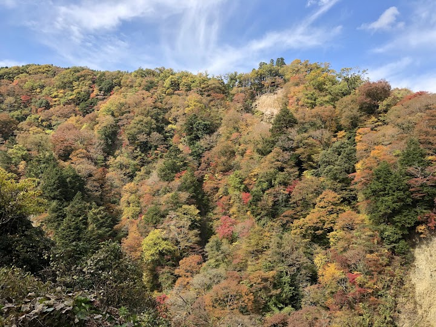
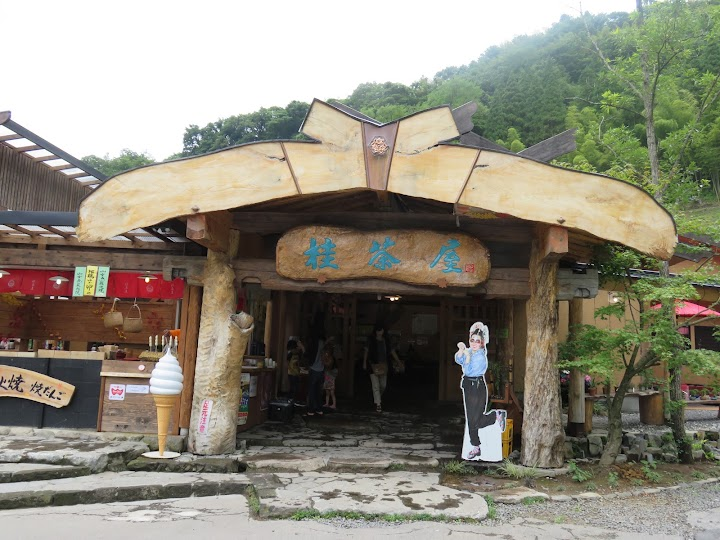
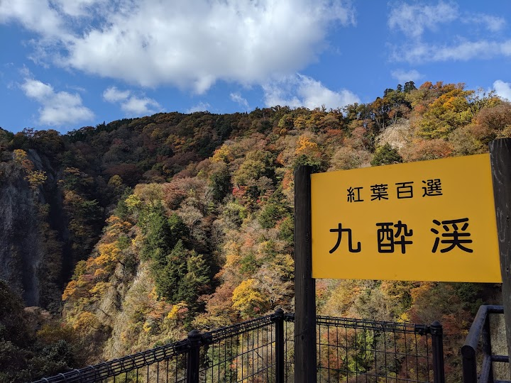
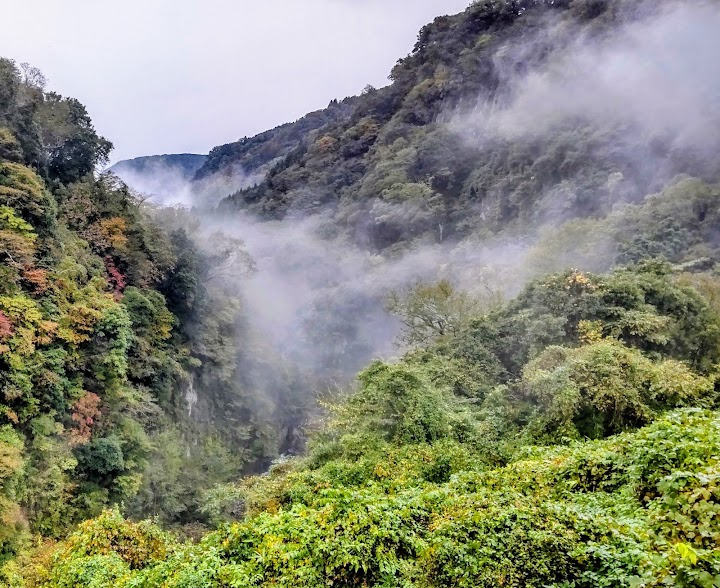
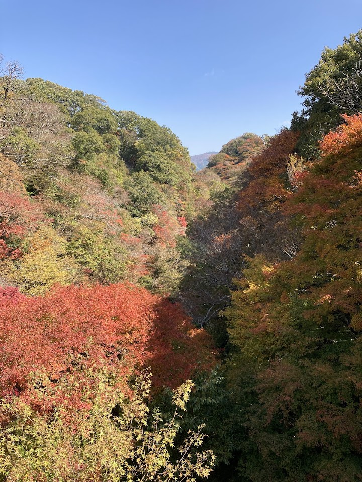

Kusuikei
Kusuikei is a scenic valley in the Kusu district of Oita with rivers and rock formations, and visitors praise the scenery and the local food. It makes a pleasant stop on the way towards Yufuin.
Open in Google Maps (street view, more photos and reviews there)





